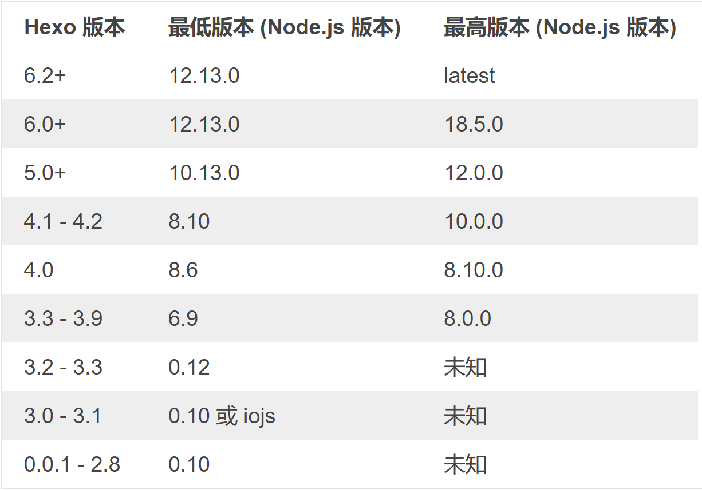
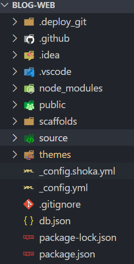

我是摘要
# 1. 安装
# 1.1 环境准备
- node 环境 - 16.x

hexo 安装
# 全局安装npm install -g hexo-cli
配置 hexo 环境变量，将 node_module 目录加入 path 变量
创建博客
hexo init [博客项目名称]
cd [博客项目名称]
npm install
# 1.2 hexo 博客项目文件说明
- _config.yml ：网站配置文件，用于设置站点信息，URL，部署，构建信息等
- _config.theme 名.yml ：主题配置文件，用于定制化个人主题
- source ：源码文件夹
- _data ：存放定制主题时相关静态资源
- _post ：存放文章与草稿，markdown 文件
- theme ：主题文件夹，将需要更换的主题放入该目录下即可
- db.json ：记录生成站点网页所需的数据
- public ：静态网页站点生成目录，部署时也是将该目录下的所有文件拷贝的网站根目录下

# 2. 美化博客
这里选用 hexo-theme-shoka 主题来进行美化，也可去主题库选用自己心仪的主题
将 shoka 主题 copy 到 theme 文件夹下：
git clone https://gitee.com/KINGWDY_admin/hexo-theme-shoka.git ./theme/shoka将默认主题 landscape 去掉，卸载：
npm uninstall hexo-theme-landscape --save
安装具体插件请参照教程，这里不再赘述，下面主要记录自己在 shoka 主题上的一些定制化修改
# 2.1 修改主要色调
shoka 主题原生使用的
–-color-orange和--color-pink两种颜色的渐变色，将theme/shoka/source/css下所有文件出现这两个颜色的地方修改成自己的颜色即可- sidebar
顶部导航栏 nav 的色调为
--nav-bg点击鼠标的火花颜色在
theme/shoka/_config.yml中fireworks配置
# 参考资料
- 官网教程：https://hexo.io/zh-cn/docs/
- shaka 主题教程：https://shoka.lostyu.me/computer-science/note/theme-shoka-doc/